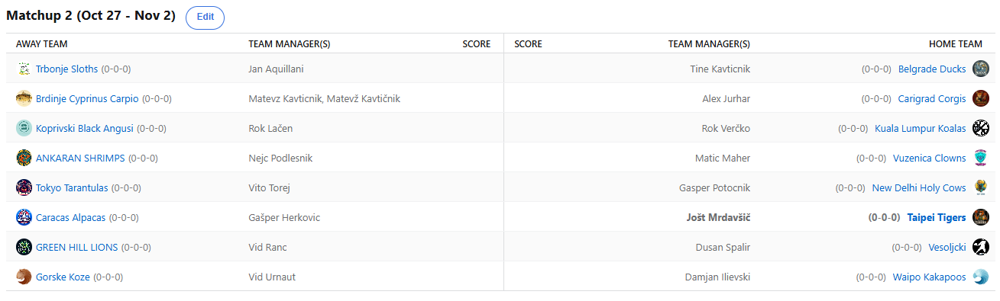

SEZONA 25/26
- Pravila in sistem tekmovanja
- Matchup1 (Oct 21 - Oct 26)
- Matchup2 (Oct 27 - Nov 2)
- Matchup3 (Nov 3 - Nov 9)
- Matchup4 (Nov 10 - Nov 16)
- Matchup5 (Nov 17 - Nov 23)
- Matchup6 (Nov 24 - Nov 30)
- Matchup7 (Dec 1 - Dec 7)
- Matchup8 (Dec 8 - Dec 14)
- Matchup9 (Dec 15 - Dec 21)
- Matchup10 (Dec 22 - Jan 28)
- Matchup11 (Dec 29 - Jan 4)
- Matchup12 (Jan 5 - Jan 11)
- Matchup13 (Jan 12 - Jan 18)
- Matchup14 (Jan 19 - Jan 25)
- Matchup15 (Jan 26 - Feb 1)
- Play-in (Feb 2 - Feb 22)
- Playoff 1 (Feb 23 - Mar 8)
- Playoff 2 (Mar 9 - Mar 22)
- Playoff 3 (Mar 23 - Apr 5)
2025/26 - Fantasy Koroška - sezona 9
MATCHUP 2 (Oct 27 - Nov 2)
Recap: MATCHUP 2
»Para su zato da se troše« je vsekakor moto tudi drugega tedna lige. Po 351$ v prvem tednu smo tokrat spružili skupno 327$ in krepko prekašamo
lanskoletno povprečje rednega dela, ki je znašalo skromnih 222$. Najbrž to slikovito priča o resnosti letos tudi tistih,
ki so lani sodelovali slabše na tržnici. Pohvalno!
Glavni zapravljivec je po pričakovanjih naš Voky, ki je spucal že 20% budgeta, pa mu to še ni prineslo zmage. Bo moral počakati še kakšno Minotto ali dve, da se bo
lahko razveselil pobjede. Do piknika pa že bo menda! Tokrat ga je ugnal Verčko, ki je s to zmago izenačil rekord Aleksa
Jurharja iz zmagovite 2020/21 sezone, ki se je nadaljeval še v naslednjo – 10 zaporednih zmag! Vsekakor zavidljiv dosežek za Veratija,
ki ga je prav Aleks redno označeval za »izven top10 playerja«. Navijamo, da mu zruši rekord in s tem na dobesedno najboljši možni način zapre gofljo.
Na poti do tega dosežka mu bo stal za zdaj še neporaženi Vito. S svojimi Tarantelami je tokrat pičil Gepsa in se rutinirano sprehodil do druge zaporedne zmage.
Očitno ga je lani izučilo in je tokrat na draftu posegal po manj steklenih igralcih in to se takoj pozna tudi na rezultatih.
Na drugi strani je Gašper zabeležil poraz kljub zelo solidnemu scoru in vsaj s tem se lahko nekoliko potolaži – zmage bodo že še prišle!
Bi si upali ta stavek ponoviti tudi za Kupsa in njegove Lenivce? Nisem povsem prepričan, trenutno zagotovo ne. Jan je eden štirih managerjev v zgodovini lige z back-to-back
najnižjim scorom tedna. Tokrat mu je to »uspelo« drugič, večkrat sta ta neslavni dosežek zabeležila le Maher in Lačen, vsak po 3x.
Ju bo Kups letos ujel? Takozvani walkover je tokrat z odprtimi rokami sprejel Tinki Binki, ki je bil nekako stavniški favorit za najvišjo zmago,
a mu ta dosežek žal ni uspel. Na tej točki bi Tinetu prijateljsko svetovali, da v tem tednu posebej pazi na svoj telefon v prisotnosti brata
Matevža … nikoli ne veš, kdaj se obupanemu Matteonu prikrade ideja o spremembi postave.
Pa je res že tako obupan? Vsekakor je Matevž vajen bolje odpirati sezone, razen enkrat je prav vedno odprl vsaj z 2-0, lani celo 7 zaporednih zmag in
7 zaporednih tednov gobcanja. Da je stvar še nekoliko slabša, pa je Matevžu, ki je bil v tem prazničnem času žejen na napačne dneve,
tokrat poraz prizadejal Aleks. Njegov nemesis je bil kar gladko boljši in v nasprotju s pričakovanji tudi on ni solil ran Kavtu s kakšnimi memi. LAME!
Upajmo da se to spremeni v prihodnjem tednu, ko si bosta nasproti stala s še enim ponavadi kar lajajočim managerjem – Cickom. V ta obračun prvega in drugega Nejc vstopa
na krilih najvišje zmage, s kar 416 točkami razlike je namreč z dopusta v Ankaranu odšel Maher. Ta hiperzaposleni strateg,
ki že zaseda svoje najljubše pozicije v rdeči coni tako na lestvici lige, kot lestvici predictionov, je sicer obljubil,
da bo v prihodnje bolj vestno izpolnjeval napovedi in da 17 opomnikov pač ni bilo dovolj. Morda bo prvo zmago zabeležil proti Gašperju Herkoviču,
ki mu tradicionalno leži (za Urnautom je to njegov drugo najbolj profitabilen nasprotnik) … ali pa tudi ne, bomo videli!
Že smo pri dvoboju dveh dobitnikov dodatnega procenta – Herko je bil v tem nič kaj živcem-prijaznem obračunu za Joleta boljši od Splošne Bolnišnice Tigers.
Verčko je nekje sredi tedna na viziti matchupa pripomnil, da Taipei Tigersi izgledajo nekako kot besedilo pesmi Kiše Jesenje … O-O-O-O-O-O.
Tudi ta zapis izgleda kot nekakšna kemijska spojina, bi vam povedali katera, pa smo imeli kemijo žal komaj 2. Bo bolje, ker slabše ne more biti.
Herko je seveda z veseljem sprejel tale free win in zdaj s scorom 2-0 vstopa v tretji teden, ko upa, da bo prekinil urok imenovan Maher.
Zapisali smo, da bodo lanski rookiji v drugi sezoni najbrž precej nevarnejši in tega se zaenkrat ob Toreju drži tudi Ranac. Austin Reaves si je oprtal Zelenobreške Leve
in jih popeljal do druge zaporedne zmage, dosežek, ki lani Rankotu ni uspel nikoli, razen ko je večkrat zapored igral z Lačnom.
ĐankoRanko je tokrat dvoboj v svojo korist odločil šele v nedeljo, ko je nekaj sreče zmanjkalo Duletu in njegovim Vesoljčkom.
No, saj z big3jem sestavljenim iz Holidaya in Huerterja bi res moralo priti do nekega res čudeža, da bi Dušan zabeležil zmago,
morda pa bo vendarle svojo drugo letošnjo slavil sočasno s svojim rojstnim dnem prihodnji teden?
Edini sophomore, ki zaenkrat še ni pokazal pretiranega napredka v primerjavi z lani pa je Ilja. Booker in Giddey sta bila prevelik zalogaj za te ne-leteče nočne papige, ki jih je
po nekaterih podatkih na svetu zgolj 237. Jim bo šlo bolje v veteranskem obračunu z Vesoljčki, ali pa se jim obeta še 3. zaporedni poraz?
Tokrat so ga v Kozji rog (no pun intended) ugnale Gorske Koze. Strateg Vid, ki se te dni mudi v deželi vzhajajočega sonca,
je po slabšem prvem krogu le prišel do prve zmage. Upajmo, da se ta toplo-hladen pristop nadaljuje tudi v tretji teden he-he.
Če bo Vid tako dedicated na FA marketu, kot je bil pri mahanju iz šihtnega kombija svojemu prijatelju sredi križišča, po tem se za Koze vendarle ni treba bati.
Kaj nas čaka v tem tednu smo skozi recap že malce najavili pa vendarle …. Obračun 1. in 2. med Cickom in Fredom, kot tudi obračun 3. in 4. med Veratijem in Toresom, pa
veteranski obračun med Duletom in Ilijo …. Vsekakor pa nas bo neizmerno zanimala tudi Matevžova ponudba bratecu, da mu morda pusti priti do prve zmage sezone.
Srečno vsem in ne pozabite na predictione (Maher pa tti)